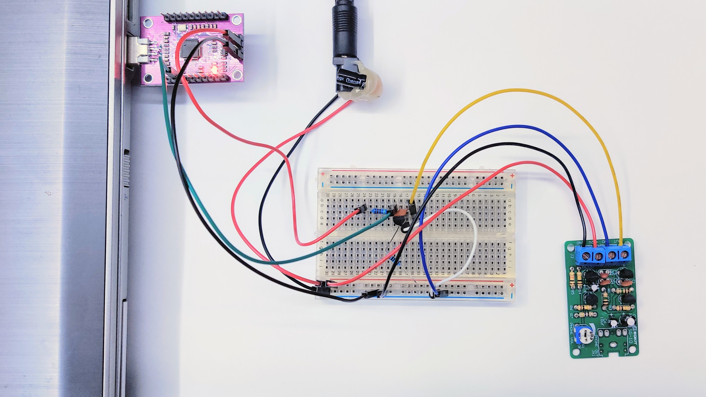

The Quest for Quantum Noise Part 1: The First Working Prototype
SG-10 noise source, transistor protection on breadboard, and FT232H interface.
1. Objective & Setup
This first test was kept deliberately simple: build a working analog front end on a breadboard and see if the noise from an SG-10 source could be read safely by an FT232H USB 2.0 interface.
The SG-10 output can go beyond what the FT232H input pin should see, so I added a small protection and conditioning stage between the source and the controller.
2. Hardware Architecture
Breadboard phase overview.

Component List
- SG-10: Noise source
- FT232H breakout board: USB 2.0 sampling interface
- 1x NPN transistor (2N3904): Protection element
- 1x Capacitor (100 nF): AC coupling
- 2x Capacitor (220 uF, 100 nF): Power filtering
- 2x Resistors (4.7 kOhm, 100 kOhm): Limiting and biasing
3. How It Works Step-by-Step
- Power Supply Filtering: The 220 uF and 100 nF capacitors sit in parallel between 12V and GND, right before the SG-10 module. That helps take the edge off small bench-supply fluctuations.
- AC Coupling: The noise from the J1 output passes through a 100 nF capacitor. That blocks the DC component and leaves the AC part for the transistor stage.
- Operating Point (Bias): The 100 kOhm resistor connected between the Base and GND (Emitter) keeps the transistor near its switching threshold, so small positive noise spikes can flip the output state.
- Digital Signal Generation:
- When the noise produces a positive spike, the transistor turns on and pulls the Collector down to GND (Logical 0).
- When the noise drops to zero or goes negative, the transistor turns off and the 4.7 kOhm pull-up resistor pulls the Collector up to the FT232H's internal 3.3V level (Logical 1).
4. Initial Benchmark & Entropy Testing
Environment Setup & Prerequisites
Click here for step-by-step setup instructions (Virtualenv, Drivers & Permissions)
1. Create a Virtual Environment & Install Dependencies
python3 -m venv venv
source venv/bin/activate
pip install -r requirements.txt2. Hardware Driver & USB Permissions
The pyftdi library talks directly to the FT232H via standard libusb drivers.
echo 'SUBSYSTEM=="usb", ATTR{idVendor}=="0403", ATTR{idProduct}=="6014", MODE="0666"' | sudo tee /etc/udev/rules.d/11-ftdi.rules
sudo udevadm control --reload-rules- Windows: use Zadig to replace the driver for Interface 0 with WinUSB or libusbK.
- macOS: ensure no native VCP drivers are locking the chip.
Testing Scenarios
- Standard Read Mode: Continuous byte streaming over the regular USB buffer path.
- Bitbang Mode: GPIO timing that is controlled more directly during sampling.
Standard Read Mode
Python script: fth_normal.py
(venv) :~/Oleesoft/fth-test$ python fth_normal.py
Smart entropy collection started (stride: 100)...
Progress: 100.0% (10 KB / 10 KB)
Done! Runtime: 72.97 s | Speed: 0.14 KB/sEntropy = 7.759041 bits per byte.
Optimum compression would reduce the size
of this 10240 byte file by 3 percent.
Chi square distribution for 10240 samples is 3793.05, and randomly
would exceed this value less than 0.01 percent of the times.
Arithmetic mean value of data bytes is 128.0612 (127.5 = random).
Monte Carlo value for Pi is 3.261430246 (error 3.81 percent).
Serial correlation coefficient is -0.014158 (totally uncorrelated = 0.0).Bitbang Mode
Python script: fth_bitbang.py
(venv) :~/Oleesoft/fth-test$ python fth_bitbang.py
=======================================================
FT232H HARDWARE RANDOM NUMBER GENERATOR (TRNG) v1.0
=======================================================
PHASE 1: High-speed raw data collection from USB...
--> Buffer size: 128 MB. Please wait...
-> Hardware read complete! Time: 18.86 s (1.91 MB/s)
PHASE 2: Mathematical post-processing (vectorized Von Neumann filtering)...
-> Filtering complete! Remaining clean sample: 2976 bytes.
PHASE 3: Cryptographic whitening (SHA-256 avalanche effect)...
=======================================================
SUCCESSFUL SAVE: noise_bb.bin
Final file size: 1472 bytes (1 KB)
Total runtime: 18.92 seconds
=======================================================Entropy = 7.874101 bits per byte.
Optimum compression would reduce the size
of this 1472 byte file by 1 percent.
Chi square distribution for 1472 samples is 250.09, and randomly
would exceed this value 57.51 percent of the times.
Arithmetic mean value of data bytes is 126.6984 (127.5 = random).
Monte Carlo value for Pi is 3.134693878 (error 0.22 percent).
Serial correlation coefficient is 0.020705 (totally uncorrelated = 0.0).Summary
| Metric | Standard Read | Bitbang Mode | Theoretical Ideal |
|---|---|---|---|
| Entropy | 7.7590 bits/byte | 7.8741 bits/byte | 8.0000 bits/byte |
| Chi-Square Susceptibility | < 0.01% (Pattern bias) | 57.51% (Looks random) | ~50.00% |
| Mean Byte Value | 128.0612 | 126.6984 | 127.5000 |
| Monte Carlo π Error | 3.81% | 0.22% | 0.00% |
| Serial Correlation | -0.0141 | 0.0207 | 0.0000 |
5. Test Results & Key Findings
Shannon Entropy
Both modes stay close to the ideal 8.0 bits per byte, but the Bitbang path comes out a bit cleaner.
Chi-Square Test Susceptibility
The clearest difference between the two modes is the spread of byte values. Standard Read picks up more USB buffering and transfer timing artifacts.
Arithmetic Mean
Both modes stay close to the 127.5 target, so there is no obvious DC drift in the output.
Monte Carlo Value for π
The Bitbang run does a bit better here, which suggests fewer obvious 2D patterns in the byte stream.
Serial Correlation Coefficient
Both values are close to zero, so there is no strong sign of memory effect in the data.
6. Summary & Next Steps
We turned a noisy transistor stage into a working, USB-connected hardware quantum random number generator prototype on a breadboard.
What We Achieved
- The noise source is usable as a random signal.
- The Bitbang path gives cleaner results than the basic USB read path.
- The byte stream does not show much obvious correlation.
Why We Need a PCB
- Unshielded jumper wires pick up mains hum and EMI.
- Long breadboard traces add parasitic capacitance.
- Loose wiring is fine for a proof of concept, not for a stable cryptographic tool.
Coming Up in Part 2
The next article moves the circuit onto a proper PCB and connects it to an RP2350-based sampling setup with cleaner routing, lower EMI, and better manufacturing readiness.
If you want to look at the underlying files, the QuantRNG GitHub Repository has the raw entropy datasets, Python acquisition scripts, and early schematic drafts.